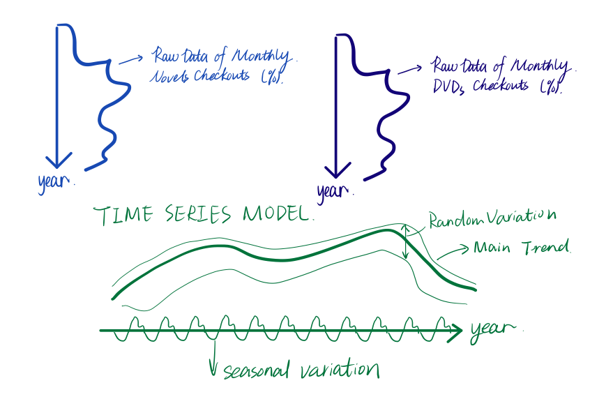
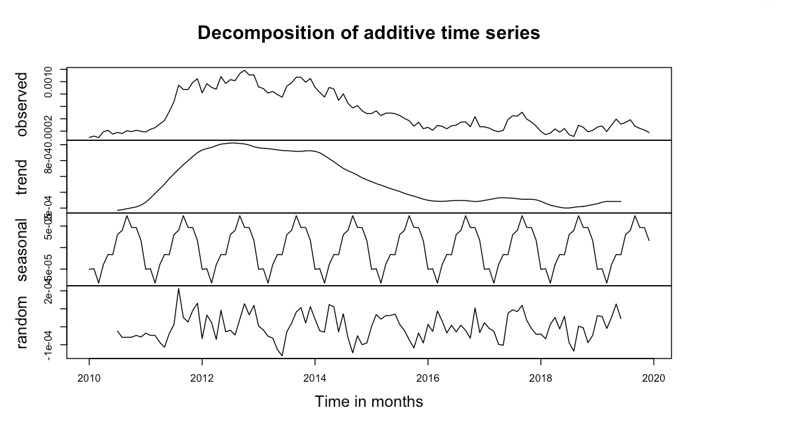
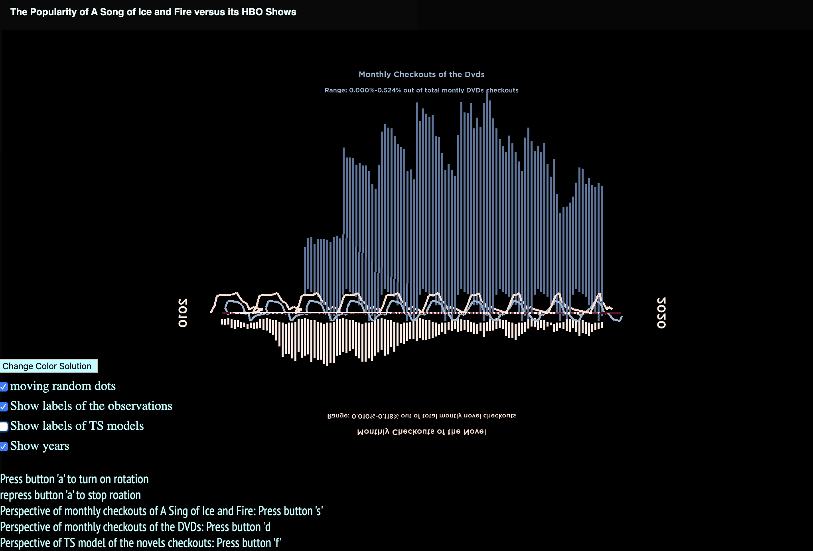
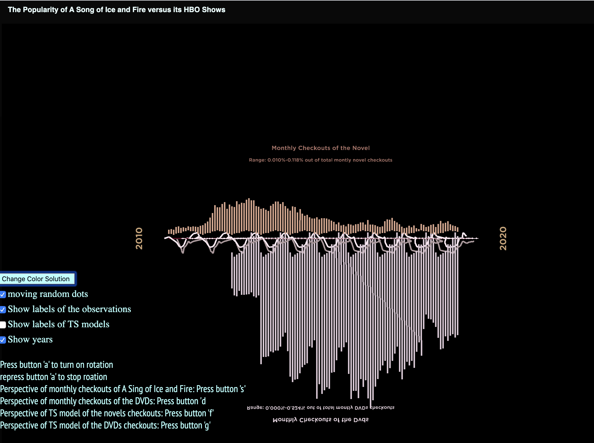
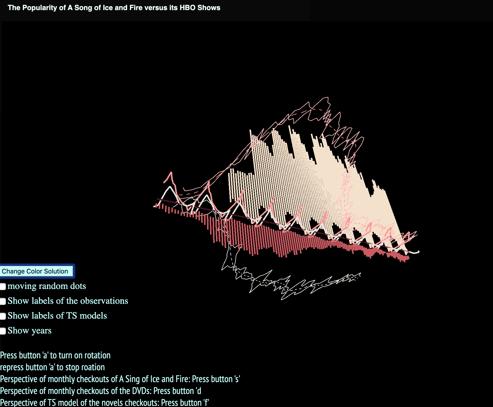
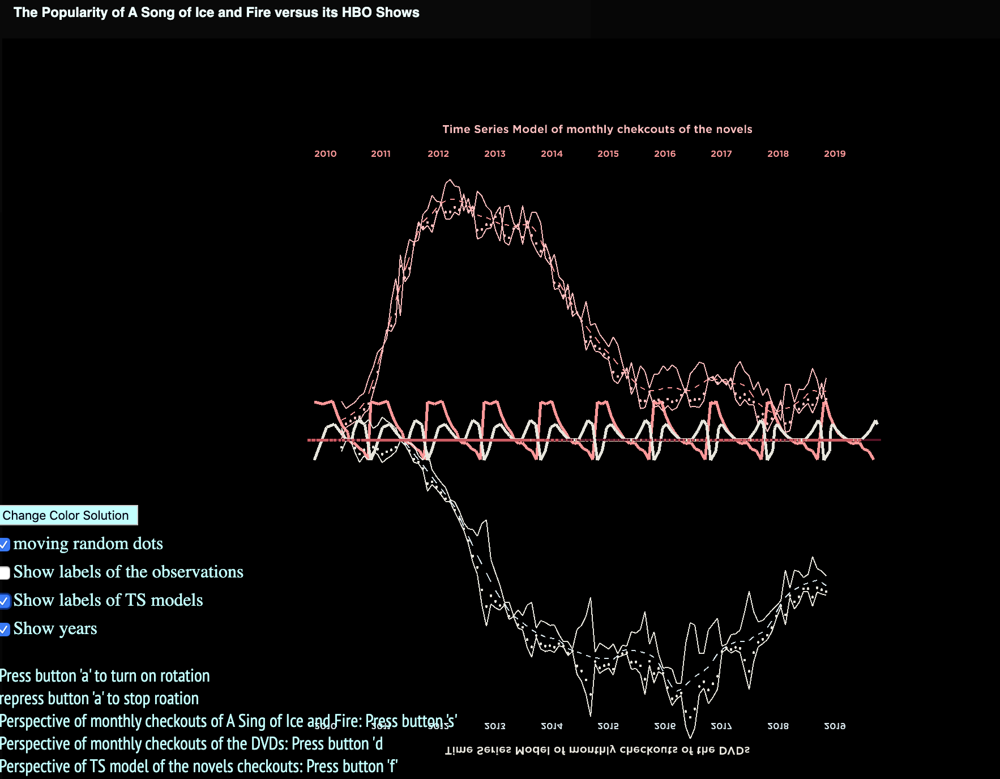

Time Series Models of Novels and DVDs of A Song of the Ice and Fire
MAT 259, 2020
Chuanxiuyue(Carol) HE
Concept
By using this 3D visualization, I would like to show the relation between the popularity of the novels of A Song of the ice and fire and the popularity of the DVDs of the HBO TV series adapted from these novels from 2010 to 2019. I used time series models to show that the variance in monthly checkout percentage of the novels and DVDs are comprised of seasonal variations, random variations and main trends.
Query
SELECT EXTRACT(YEAR_MONTH FROM cout) AS year_months,
COUNT(CASE WHEN (LOWER(title) IN ('game of thrones' , 'game of thrones the graphic novel Volume 1','game of thrones the graphic novel Volume 2',
'game of thrones the graphic novel Volume 3','game of thrones the graphic novel Volume 4') AND itemtype = 'acbk') THEN 1 END) AS novel1,
COUNT(CASE WHEN(LOWER(title) IN ('clash of kings' , 'clash of kings the graphic novel Volume 1','clash of kings the graphic novel Volume 2',
'clash of kings book two of A song of ice and fire') AND itemtype = 'acbk')THEN 1 END) AS novel2,
COUNT(CASE WHEN (LOWER(title) = 'storm of swords' AND itemtype = 'acbk') THEN 1 END) AS novel3,
COUNT(CASE WHEN (LOWER(title) = 'feast for crows' AND itemtype = 'acbk') THEN 1 END) AS novel4,
COUNT(CASE WHEN (LOWER(title) = 'dance with dragons' AND itemtype = 'acbk') THEN 1 END) AS novel5,
COUNT(CASE WHEN (LOWER(title) = 'game of thrones the complete first season' AND itemtype = 'acdvd') THEN 1 END) AS season1,
COUNT(CASE WHEN (LOWER(title) = 'game of thrones the complete second season'
AND itemtype = 'acdvd') THEN 1 END) AS season2,
COUNT(CASE WHEN (LOWER(title) = 'game of thrones the complete third season'
AND itemtype = 'acdvd') THEN 1 END) AS season3,
COUNT(CASE WHEN (LOWER(title) = 'game of thrones the complete fourth season'
AND itemtype = 'acdvd') THEN 1 END) AS season4,
COUNT(CASE WHEN (LOWER(title) = 'game of thrones the complete fifth season'
AND itemtype = 'acdvd') THEN 1 END) AS season5,
COUNT(CASE WHEN (LOWER(title) = 'game of thrones the complete sixth season'
AND itemtype = 'acdvd') THEN 1 END) AS season6,
COUNT(CASE WHEN (LOWER(title) = 'game of thrones the complete seventh season'
AND itemtype = 'acdvd') THEN 1 END) AS season7,
COUNT(CASE WHEN (LOWER(title) = 'game of thrones the complete eighth season'
AND itemtype = 'acdvd') THEN 1 END) AS season8
FROM spl_2016.outraw WHERE EXTRACT(YEAR_MONTH FROM cout) != '202002' GROUP BY EXTRACT(YEAR_MONTH FROM cout) LIMIT 500;
Preliminary sketches
Based on theories related to time series, variance in some types of time series can be decomposed into three different parts. First part is a main trend, which means, in general, a decreasing or increasing or quadratic trend over years. The second part is seasonality, which means the monthly checkouts vary due to the time within a year.

For example, people may borrow more novels or DVDs in winter due to Christmas. The last part is random component, which means there are some trivial and dynamic factors causing the fluctuations in monthly checkouts. For example, please see below variation decomposition figure for novels.

Process
Monthly checkouts percent of the novels related to A Song of the ice and fire were calculated. The same pre-processing procedure were done for the DVDs of the HBO TV series counterparts. I calculated the monthly percentage instead of using raw checkouts because according to project 1, my classmates also found similar trends of checkouts regarding to other items. Thus, I would like to control the total checkouts to exclude the factor that people might not borrow items too frequently these years in general. Then, the monthly percentages were input into Rstudio to develop two time series models for the novels and the DVDs separately.
Before model development, it was noted that there are missing values for January and February in 2018. Thus, I used an interpolation function to estimate the values for these two months (See details in the .rmd file).


Final result
Click
here to see the online demo.
Show general structure of the visualization contained by 4 layers. Users can change color solutions by clicking "Change Color Solution button" to switch among 3 sets of colors.

Users can check different perspectives of the structure by pressing different button and the instructions are on the left-bottom side of the screen. They can lso use the checkboxes to tun on/off different features, such as labels.

By checking the checkbox to turn on the random dots, users can see random dots bouce between the bounds of the random component.
If mouse move to the left side of the screen (close to the buttons and checkboxes) the instructions below will show up. However, if mouse move away, the instructions will disappear. I added this feature to make the whole canvas tidier.
The result shows that novels did help to boost novel reading at beginning but after releasing Season 4 of Game of Thrones, the interest of reading novels went done. Also, people would like to borrow DVDs when they were newly released but the interest of borrowing did not last very long.
Both novel reading and DVD watching shows seasonality but they only contribute to a small amount of fluctuation. In general, people are still more interested in watching DVDs than reading novels. The random component accounts for more fluctuation of novel reading than that of DVD watching.
This visualization is far away from being perfect. First, it just combine several 2D visualization instead of taking full advantage of 3D space. Second, it would be better to show the connection and relationship between novels and DVDs as opposed to plotting them in different layers.
Code
Visualization is developed within P5.js and Model Development is conducted in RStudio. Data Withdraw and pre-processing was done in myMQL and Excel
Source Code + Data